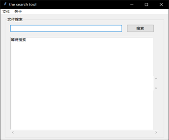

在python学习过程中有一次需要进行GUI 的绘制，
而在python中有自带的库tkinter可以用来简单的GUI编写，于是转而学习tkinter库的使用。
学以致用，现在试着编写一个简单的磁文件搜索工具，
方法就是将指定的文件夹进行扫描遍历，把其中的每个文件路径数据存入数据库，
然后使用数据库搜索文件就很快捷。实现的效果大致如下：

整个程序分为大致几个模块：
主界面的绘制，
指定文件夹功能函数，
搜索文件功能函数，
ui线程与扫描线程同步函数，
扫描线程工作函数
要实现扫描文件功能时，
导入了一个这样的模块 disk.py
这个模块实现的功能就是将指定文件夹下的所有文件遍历，并将路径和所在盘符存到一个列表中返回
import os
import os.path as pt
def scan_file(path):
result = []
for root, dirs, files in os.walk(path):
for f in files:
file_path = pt.abspath(pt.join(root, f))
result.append((file_path, file_path[0])) # 保存路径与盘符
return result然后我们需要将扫描到的文件存入到数据库中，
因此需要编写数据库模块 datebase.py
import sqlite3
class DataMgr:
def __init__(self):
# 创建或打开一个数据库
# check_same_thread 属性用来规避多线程操作数据库的问题
self.conn = sqlite3.connect("file.db", check_same_thread=False)
# 建表
self.conn.execute('create table if not exists disk_table('
'id integer primary key autoincrement,'
'file_path text,'
'drive_letter text)')
# 创建索引 用来提高搜索速度
self.conn.execute('create index if not exists index_path on disk_table(file_path)')
# 批量插入数据
def batch_insert(self, data):
for line in data:
self.conn.execute('insert into disk_table values (null,?,?)', line)
self.conn.commit()
# 模糊搜索
def query(self, key):
cursor = self.conn.cursor()
cursor.execute("select file_path from disk_table where file_path like ?", ('%{0}%'.format(key),))
r = [row[0] for row in cursor]
cursor.close()
return r
def close(self):
self.conn.close()
还需要一个额外的模块为 progressbar.py
这个模块的功能是在扫描时弹出一个进度条窗口，
使得GUI功能看起来更完善
from tkinter import *
from tkinter import ttk
class GressBar:
def start(self):
top = Toplevel() # 弹出式窗口，实现多窗口时经常用到
self.master = top
top.overrideredirect(True) # 去除窗体的边框
top.title("进度条")
Label(top, text="正在扫描选定路径的文件,请稍等……", fg="blue").pack(pady=2)
prog = ttk.Progressbar(top, mode='indeterminate', length=200) # 创建进度条
prog.pack(pady=10, padx=35)
prog.start()
top.resizable(False, False) # 参数为false表示不允许改变窗口尺寸
top.update()
# 计算窗口大小，使显示在屏幕中央
curWidth = top.winfo_width()
curHeight = top.winfo_height()
scnWidth, scnHeight = top.maxsize()
tmpcnf = '+%d+%d' % ((scnWidth - curWidth) / 2, (scnHeight - curHeight) / 2)
top.geometry(tmpcnf)
top.mainloop()
def quit(self):
if self.master:
self.master.destroy()
主体的search.py 代码：
1 from tkinter import *
2 from tkinter import ttk
3 import tkinter.filedialog as dir
4 import queue
5 import threading
6 import progressbar
7 import disk
8 from database import DataMgr
9
10
11 class SearchUI:
12
13 def __init__(self):
14 # 创建一个消息队列
15 self.notify_queue = queue.Queue()
16 root = Tk()
17 self.master = root
18 self.create_menu(root)
19 self.create_content(root)
20 self.path = 'D:'
21 root.title('the search tool')
22 root.update()
23 # 在屏幕中心显示窗体
24 curWidth = root.winfo_width()
25 curHeight = root.winfo_height()
26 scnWidth, scnHeight = root.maxsize() # 得到屏幕的宽度和高度
27 tmpcnf = '+%d+%d' % ((scnWidth - curWidth)/2, (scnHeight-curHeight)/2)
28 root.geometry(tmpcnf)
29
30 # 创建一个进度条对话框实例
31 self.gress_bar = progressbar.GressBar()
32
33 # 创建一个数据库的实例
34 self.data_mgr = DataMgr()
35
36 # 在UI线程启动消息队列循环
37 self.process_msg()
38 root.mainloop()
39
40 # ui线程与扫描线程同步
41 def process_msg(self):
42 # after方法，相当于一个定时器，
43 # 第一个参数是时间的毫秒值，
44 # 第二个参数指定执行一个函数
45 self.master.after(400, self.process_msg)
46 # 这样我们就在主线程建立了一个消息队列，
47 # 每隔一段时间去消息队列里看看，
48 # 有没有什么消息是需要主线程去做的，
49 # 有一点需要特别注意，
50 # 主线程消息队列里也不要干耗时操作，
51 # 该队列仅仅用来更新UI。
52 while not self.notify_queue.empty():
53 try:
54 msg = self.notify_queue.get()
55 if msg[0] == 1:
56 self.gress_bar.quit()
57
58 except queue.Empty:
59 pass
60
61 # 扫描线程工作
62 def execute_asyn(self):
63 # 定义一个scan函数，放入线程中去执行耗时扫描
64 def scan(_queue):
65 if self.path:
66 paths = disk.scan_file(self.path) # 位于disk.py
67 self.data_mgr.batch_insert(paths) # 位于database.py
68
69 _queue.put((1,))
70 th = threading.Thread(target=scan, args=(self.notify_queue,))
71 th.setDaemon(True) # 设置为守护进程
72 th.start()
73
74 self.gress_bar.start()
75
76 # 菜单绘制
77 def create_menu(self, root):
78 menu = Menu(root) # 创建菜单
79
80 # 二级菜单
81 file_menu = Menu(menu, tearoff=0)
82 file_menu.add_command(label='设置路径', command=self.open_dir)
83 file_menu.add_separator()
84 file_menu.add_command(label='扫描', command=self.execute_asyn)
85
86 about_menu = Menu(menu, tearoff=0)
87 about_menu.add_command(label='version1.0')
88
89 # 在菜单栏中添加菜单
90 menu.add_cascade(label='文件', menu=file_menu)
91 menu.add_cascade(label='关于', menu=about_menu)
92 root['menu'] = menu
93
94 # 主界面绘制
95 def create_content(self, root):
96 lf = ttk.LabelFrame(root, text='文件搜索')
97 lf.pack(fill=X, padx=15, pady=8)
98
99 top_frame = Frame(lf)
100 top_frame.pack(fill=X, expand=YES, side=TOP, padx=15, pady=8)
101
102 self.search_key = StringVar()
103 ttk.Entry(top_frame, textvariable=self.search_key, width=50).pack(fill=X, expand=YES, side=LEFT)
104 ttk.Button(top_frame, text="搜索", command=self.search_file).pack(padx=15, fill=X, expand=YES)
105
106 bottom_frame = Frame(lf)
107 bottom_frame.pack(fill=BOTH, expand=YES, side=TOP, padx=15, pady=8)
108
109 band = Frame(bottom_frame)
110 band.pack(fill=BOTH, expand=YES, side=TOP)
111
112 self.list_val = StringVar()
113 listbox = Listbox(band, listvariable=self.list_val, height=18)
114 listbox.pack(side=LEFT, fill=X, expand=YES)
115
116 vertical_bar = ttk.Scrollbar(band, orient=VERTICAL, command=listbox.yview)
117 vertical_bar.pack(side=RIGHT, fill=Y)
118 listbox['yscrollcommand'] = vertical_bar.set
119
120 horizontal_bar = ttk.Scrollbar(bottom_frame, orient=HORIZONTAL, command=listbox.xview)
121 horizontal_bar.pack(side=BOTTOM, fill=X)
122 listbox['xscrollcommand'] = horizontal_bar.set
123
124 # 给list动态设置数据，set方法传入一个元组
125 self.list_val.set(('等待搜索',))
126
127 # 搜索文件
128 def search_file(self):
129 if self.search_key.get():
130 result_data = self.data_mgr.query(self.search_key.get())
131 if result_data:
132 self.list_val.set(tuple(result_data))
133
134 # 指定文件夹
135 def open_dir(self):
136 d = dir.Directory()
137 self.path = d.show(initialdir=self.path)
138
139
140 if __name__ == '__main__':
141 SearchUI()
问题总结：
1.UI线程负责界面的绘制与更新，如果在UI线程中进行耗时操作，会影响界面的流畅性，所以需要异步线程。
此时的问题在于UI的主线程与异步线程的通信问题，为什么一定要两个线程通信？
因为在大多数GUI界面编程中，异步线程都是不能对当前界面进行操作更新的，否则会引起界面混乱。
可以简单的理解成 如果异步线程也操作主界面，则两个线程对相同资源进行操作，就会导致混乱。
接下来的问题是tkinter中没有提供接口进行线程通信，因此我们通过消息队列的方式来同步线程，用到的类为Queue。
项目中当在消息队列中检索到消息为元组（1， ）时，说明子线程（扫描）已经结束了，告知主线程可以结束子线程了。
2.扫描文件夹时需要将所选文件夹中的所有文件遍历一遍，发现python中提供了方法os.walk(path), 可以直接达到这一效果，所以说python在写代码时确实提供了方便。
3.该磁盘搜索工具用到的原理是将文件路径存到数据库中，再进行检索。 选用的数据库为sqlite，已经可以满足该项目的要求。在主线程创建数据库，子线程操作数据库，有可能出现问题，因此设置check_same_thread = false 来拒绝多线程的访问。
4.在进行GUI编程时，打算在扫描等待时添加一个进度条显示窗口，也就需要多窗口，用到了toplevel，表现为一个弹出式窗口，在使用toplevel时，要注意首先需要一个根窗口。